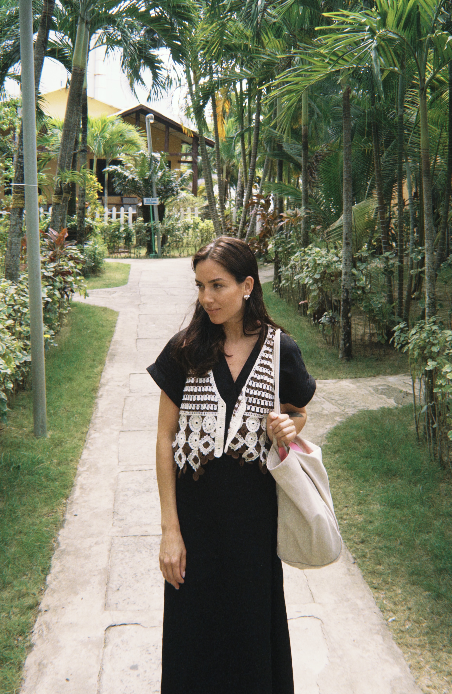

Ксения — художница, исследующая повседневность как пространство человеческих переживаний. В центре её внимания — моменты, которые легко проходят незамеченными: встречи и расставания, память о близких, изменчивость природы, ощущение дома и времени.
Работая преимущественно маслом на холсте, Ксения создаёт фигуративные произведения, в которых реальность становится носителем эмоционального опыта. Её интересует не документальная точность, а внутреннее состояние человека и способность изображения сохранять чувства, которые невозможно выразить словами.
Основой для картин служат фотографии, личные архивы и наблюдения. Преобразуя их в живописные композиции, художница исследует, как память меняет увиденное, а цвет становится самостоятельным языком повествования.
Все работы объединены размышлениями о хрупкости человеческих связей, ценности совместно прожитых моментов и поиске устойчивости в мире постоянных перемен.
